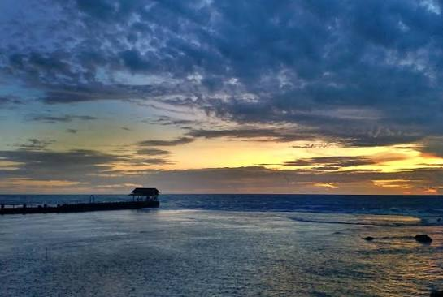
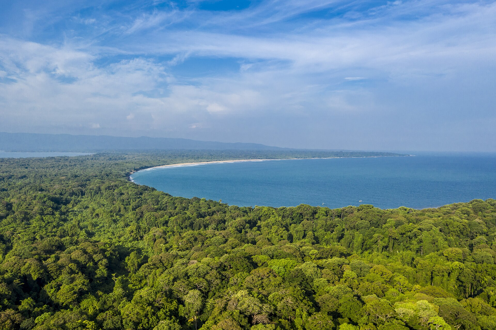
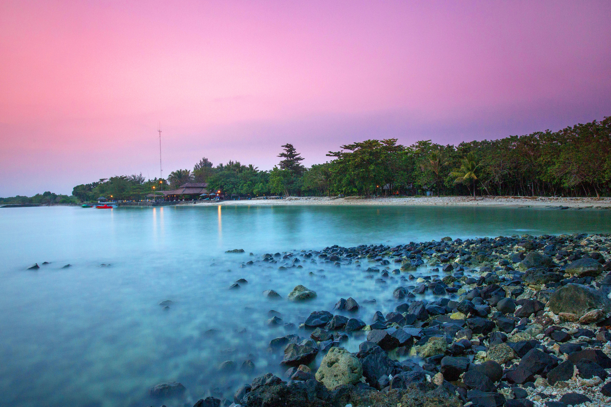
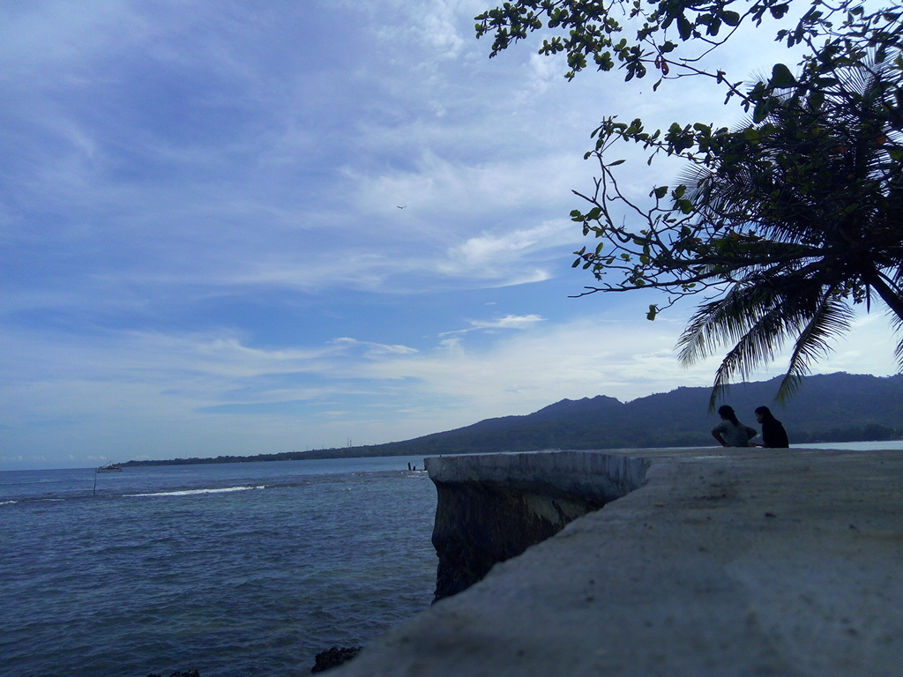
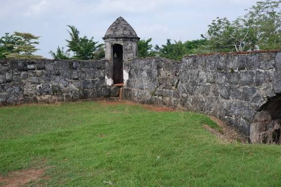

Berikut beberapa tempat wisata populer di provinsi Banten yang harus kamu kunjungi.

Pantai legendaris dengan panorama Gunung Anak Krakatau yang ideal untuk liburan keluarga
Lihat Detail →
Suaka perlindungan Badak Jawa yang menawarkan petualangan hutan liar dan pulau eksotis
Lihat Detail →Dua batu karang raksasa menyerupai layar kapal yang berdiri kokoh menantang ombak
Lihat Detail →
Kawasan resor premium dengan pasir putih dan air jernih khusus pecinta olahraga air
Lihat Detail →
Serunya rekreasi pantai dan berburu sunset indah di Selat Sunda
Lihat Detail →
Napak tilas sejarah kolonial di reruntuhan benteng abad ke-17
Lihat Detail →